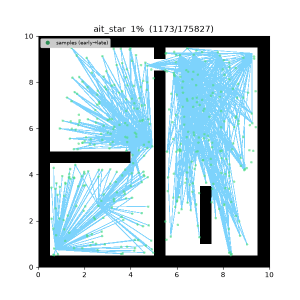
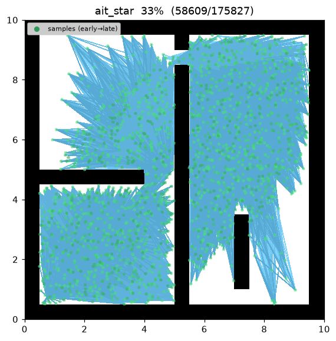
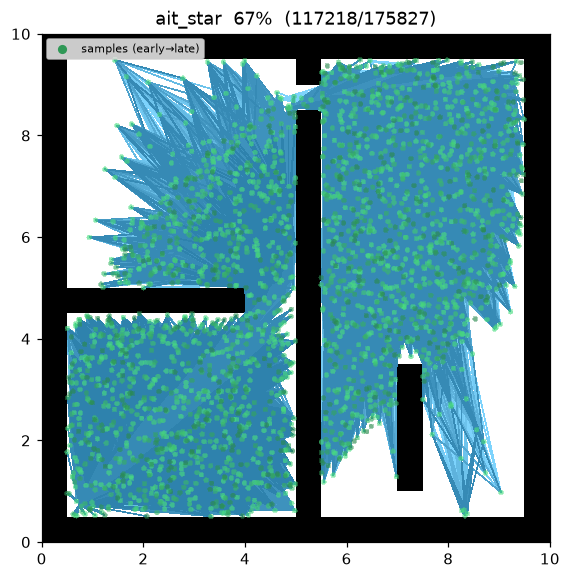
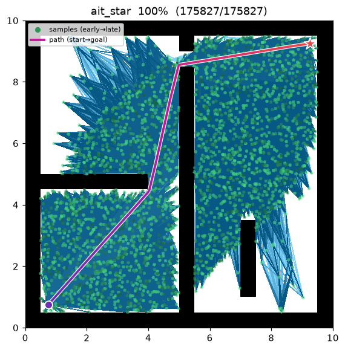
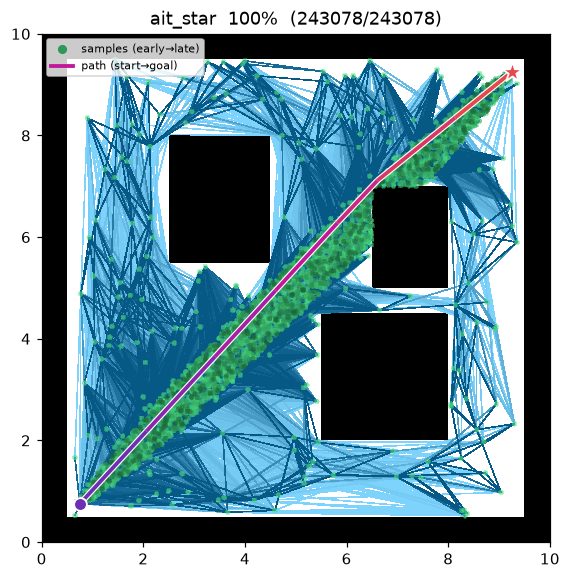

AIT* (Adaptively Informed Trees)¶
| 항목 | 내용 |
|---|---|
| 분류 | sampling-based, batch, anytime, asymptotically optimal |
| 요구 capability | SamplingSpace |
| 완전성 | probabilistically complete |
| 최적성 | almost-surely asymptotically optimal — BIT* 와 동급 |
| 핵심 아이디어 | cost-to-go 휴리스틱을 그래프 위 역방향 탐색으로 계산 + 무효 간선 피드백 |
| 원 논문 | Strub & Gammell (2020, ICRA; 확장판 IJRR 2022) 1 |
배경¶
BIT*2 는 cost-to-go 휴리스틱으로 직선거리 \(\hat h(x)=\lVert x-\text{goal}\rVert\) 를 쓴다. 이 값은 장애물을 무시하므로, 미로처럼 우회가 필요한 맵에서는 실제 도달 비용을 크게 과소평가한다. Strub & Gammell1 은 이 휴리스틱을 현재 RGG 위의 역방향 탐색으로 대체한 AIT* 를 제안했다:
- 정보성(informed). goal 에서 그래프를 따라 역방향 Dijkstra 를 돌려 얻은 \(\hat h\) 는 직선이 아니라 그래프의 실제 연결성(벽을 돌아가는 우회)을 반영한다.
- 적응성(adaptive). forward 탐색이 간선을 검증하다 무효(충돌)로 판정한 간선은 이후 모든 역방향 탐색의 그래프에서 영구 제외된다. 즉 장애물이 발견될수록 휴리스틱이 스스로 교정된다.
두 탐색은 서로를 먹여 살린다 — 역방향 탐색이 forward 탐색을 안내하고, forward 탐색의 무효 간선 발견이 다음 역방향 탐색의 그래프를 조인다.
동작 원리¶
maze01 에서의 탐색. 역방향 탐색이 주는 장애물 반영 휴리스틱 덕분에, 벽을 무시하는 직선 추정에
막히는 대신 forward 탐색이 배치를 거듭하며 미로 벽을 따라 우회해 나간다.

탐색 중간 과정 (좌 → 우: 초반 / 중반 / 최종 경로):
 |
 |
 |
open01 최종 결과 — 우회할 장애물이 없어 역방향 휴리스틱이 이미 직선거리와 일치하므로 탐색이
빠르게 연결된다:

배치마다 다음을 수행한다.
AIT_STAR(start, goal):
points ← [start, goal]; invalid ← ∅; c_best ← ∞
for batch in 1..max_batches:
points ← points ∪ draw(batch_size, c_best) # informed 배치 (해 존재 시)
r ← gamma · sqrt(log n / n); N ← radius_neighbors(points, r)
# (역방향) 적응 휴리스틱: goal 에서 invalid 를 제외한 그래프 위 Dijkstra
h_hat ← reverse_dijkstra(goal, N \ invalid) # 충돌검사 없음(optimistic)
# (전방) g + h_hat 로 keyed 된 A*, 각 간선은 lazy 검증
g[start] ← 0; open ← {(h_hat[start], start)}
while open:
v ← pop_min(open) # stale 엔트리는 skip
for x in N[v] \ invalid:
emit candidate_evaluated(x, g[v]+‖v−x‖)
if not is_motion_valid(v, x):
invalid ← invalid ∪ {(v,x)} # 적응 피드백
continue
if g[v]+‖v−x‖ < g[x]: # 연결 또는 rewire
g[x] ← g[v]+‖v−x‖; parent[x] ← v
push (g[x]+h_hat[x], x) to open
if x = goal and g[x] < c_best: c_best ← g[x]
return path(goal)
\(g[v]\) 는 forward 트리의 cost-to-come, \(\hat h[v]\) 는 위 역방향 탐색이 준 cost-to-go 다. forward
탐색은 \(f[v]=g[v]+\hat h[v]\) 최소 정점을 꺼내는 표준 A* 이며, 간선 충돌 검사는 relax 하는
순간에만 (lazy) 수행한다. 무효로 밝혀진 간선은 invalid 에 쌓여 이후 배치의 역방향 탐색에서
빠지므로, 휴리스틱이 배치를 거듭할수록 정확해진다.
역방향 탐색은 간선을 검증하지 않는 낙관적(optimistic) 추정이다 — 실제 검증은 forward 탐색이 담당하고, 그 결과가 다음 배치의 역방향 그래프를 교정한다. 이 "낙관적 역방향 + 검증하는 전방" 의 상호작용이 AIT* 의 정의적 성질이다.
c_best 가 생기면 이후 배치는 informed ellipse(Gammell et al. 20143)에서 표본을
뽑아 개선 가능 영역에만 표본을 집중시킨다 — BIT*/Informed RRT* 와 동일한 anytime 의미론.
구현상 단순화¶
원 논문1 은 단일 증분(incremental) 양방향 LPA* 기반 탐색으로 역방향 트리를 국소 수리하고 forward 의 \(g\) 값을 이벤트 간 재사용한다. 본 구현은 이를 다음과 같이 의도적으로 축소했다:
- 각 배치에서 역방향 탐색과 forward 의 \(g\)/
parent를 누적된 전체 표본 위에서 처음부터 다시 계산한다 (LPA* 의 증분성 미구현).
이 단순화는 탐색을 어떻게 갱신하는가 라는 최적화(LPA* 증분성)만 덜어낸 것으로, AIT* 의 정의적 행위 — 장애물을 반영하고 무효 간선에 적응해 스스로 교정되는 역방향 휴리스틱이 forward 탐색을 안내한다 — 는 그대로 보존한다. 따라서 informed·adaptive 라는 성질과 점근 최적성 보장은 유지하면서 구현을 다룰 수 있는 범위로 유지한다. 완전한 증분 LPA* 는 향후 확장 여지로 남긴다.
성질¶
- 완전성: probabilistically complete1.
- 최적성: almost-surely asymptotically optimal — BIT* 와 동급. 배치가 쌓이며 RGG 가 조밀해지고 역방향 휴리스틱이 정확해져 최적으로 수렴한다.
- 적응성: 무효 간선이 역방향 그래프에서 영구 제외되므로, 우회가 필요한 맵에서 직선 휴리스틱(BIT*)보다 탐색을 덜 낭비한다.
- anytime: 첫 배치에서 해가 나오면 이후 배치가 경로를 계속 조인다.
max_batches소진 시 현재 최선 해를 반환한다.
파라미터¶
| 이름 | 타입 | 기본값 | 범위 | 설명 |
|---|---|---|---|---|
batch_size |
int | 200 | [1, 100000] | 배치당 새로 뿌리는 (informed) 샘플 수 |
max_batches |
int | 15 | [1, 10000] | 최대 배치 수 (anytime — 소진 시 현재 best 반환) |
gamma |
float | 30.0 | [0.01, 1000.0] | RGG 연결 반경 계수 γ. r_n = γ·(log n / n)^(1/2) |
seed |
int | 1 | [0, 2^31−1] | 난수 시드 (재현성) |
방출 trace 이벤트¶
planning_started → sample_drawn* → candidate_evaluated* → (edge_added | rewire)* → path_found* → planning_finished
sample_drawn 은 배치별 표본, candidate_evaluated 는 forward 탐색이 relax 전에 평가한 후보,
edge_added 는 최초 연결 간선, rewire 는 이미 연결된 정점의 부모 개선, path_found 는 goal
비용이 개선될 때마다 방출된다.
References¶
-
Strub, M. P., & Gammell, J. D. (2020). "Adaptively Informed Trees (AIT*): Fast Asymptotically Optimal Path Planning through Adaptive Heuristics." Proc. IEEE ICRA, 3191–3198. doi:10.1109/ICRA40945.2020.9197338 · 확장판: Strub, M. P., & Gammell, J. D. (2022). "AIT* and EIT*: Asymptotically optimal path planning through adaptively and exactly informed sampling-based algorithms." The International Journal of Robotics Research, 41(4), 390–417. doi:10.1177/02783649211069572 · PDF (arXiv) ↩↩↩↩
-
Gammell, J. D., Srinivasa, S. S., & Barfoot, T. D. (2015). "Batch Informed Trees (BIT*): Sampling-based optimal planning via the heuristically guided search of implicit random geometric graphs." Proc. IEEE ICRA, 3067–3074. doi:10.1109/ICRA.2015.7139620 · PDF (arXiv) ↩
-
Gammell, J. D., Srinivasa, S. S., & Barfoot, T. D. (2014). "Informed RRT*: Optimal sampling-based path planning focused via direct sampling of an admissible ellipsoidal heuristic." Proc. IEEE/RSJ IROS, 2997–3004. doi:10.1109/IROS.2014.6942976 · PDF (arXiv) ↩